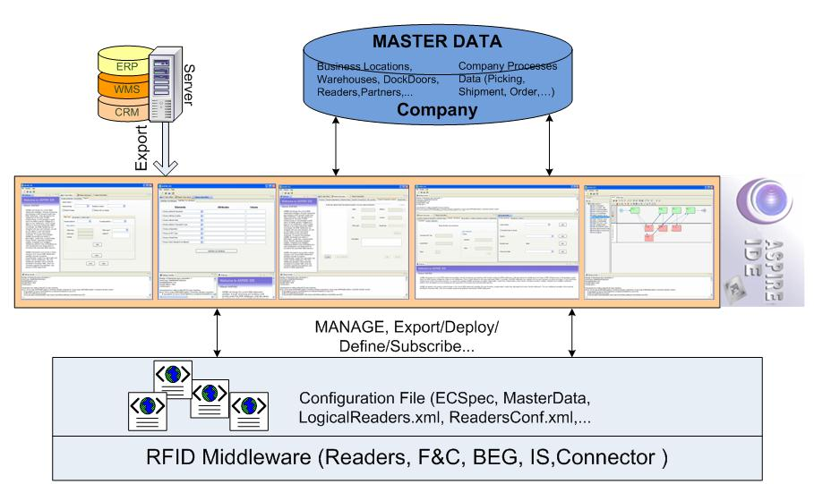

AspireRFID IDE

ASPIRE will implement a number of editing and management tools enabling RFID consultants and/or users to easily build and deploy RFID solutions. The purpose of these tools will be twofold:
- To minimize the programming and configuration effort required to implement and fully leverage an RFID solution.
- To manifest the programmability capabilities of the ASPIRE middleware platform, through demonstrating that end-to-end RFID solution can be essentially built and deployed using the ASPIRE tools.
The ASPIRE editing tools will deal with specification and configuration of middleware functionalities. The tools will be integrated in a single integrated development environment (IDE) for RFID applications, which we conveniently call ASPIRE IDE.
The ASPIRE IDE components provide means of configuration of the underlying ASPIRE infrastructure. The user by describing his requirements to the IDE, which provides all the configuration options, will “translate” them into configuration messages by which it will supply all the appropriate modules.
ASPIRE IDE has been designed as an Eclipse RCP (Rich Client Platform) application that will run over Equinox OSGI server. It uses the command API to define menus, pop-up menu items and toolbars so as to support easily plug-ins and provide more control. Every tool will be an eclipse plug-in/bundle that will be able to be installed or removed as needed. This way many editions of the ASPIRE IDE can be released depending on the functionalities required (as simple or as complicate depending on the demands) for the ASPIRE’s RFID middleware blocks that will be used.
The AspireRFID IDE is combined from the tools below:
 PDF
PDF History
History

{kind=link}